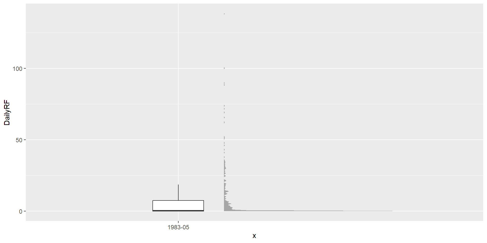
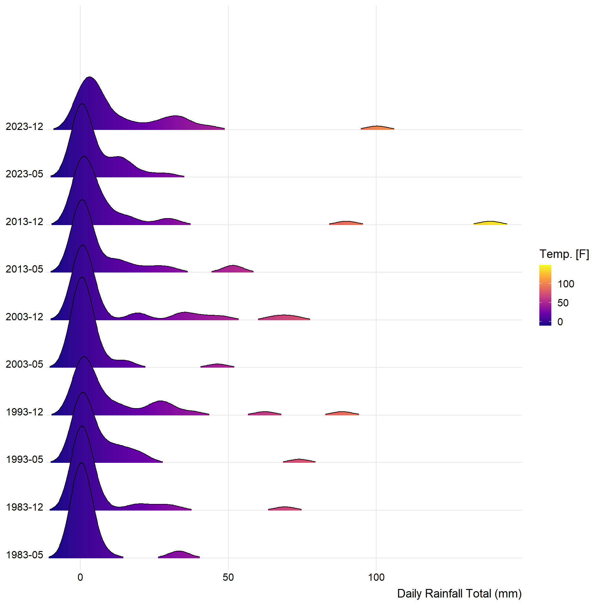
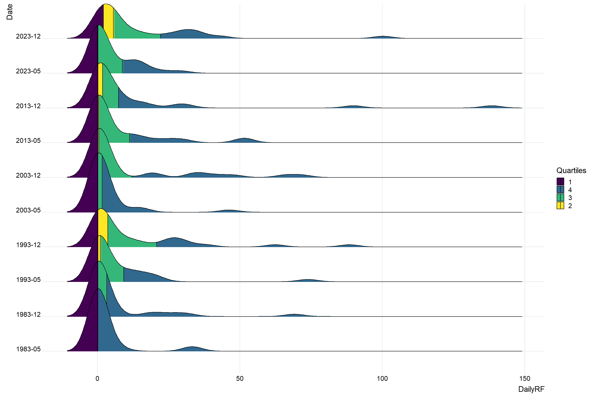

pacman::p_load(plotly, ggtern, tidyverse,haven,ggdist, ggridges, ggthemes,
colorspace, tidyverse)Take-home_Exercise03
f198305 <- read_csv("data/198305.csv")Rows: 31 Columns: 8
── Column specification ────────────────────────────────────────────────────────
Delimiter: ","
chr (4): Station, Highest 30 Min Rainfall (mm), Highest 60 Min Rainfall (mm)...
dbl (4): Year, Month, Day, Daily Rainfall Total (mm)
ℹ Use `spec()` to retrieve the full column specification for this data.
ℹ Specify the column types or set `show_col_types = FALSE` to quiet this message.f198312 <- read_csv("data/198312.csv")Rows: 31 Columns: 8
── Column specification ────────────────────────────────────────────────────────
Delimiter: ","
chr (4): Station, Highest 30 Min Rainfall (mm), Highest 60 Min Rainfall (mm)...
dbl (4): Year, Month, Day, Daily Rainfall Total (mm)
ℹ Use `spec()` to retrieve the full column specification for this data.
ℹ Specify the column types or set `show_col_types = FALSE` to quiet this message.f199305 <- read_csv("data/199305.csv")Rows: 31 Columns: 8
── Column specification ────────────────────────────────────────────────────────
Delimiter: ","
chr (4): Station, Highest 30 Min Rainfall (mm), Highest 60 Min Rainfall (mm)...
dbl (4): Year, Month, Day, Daily Rainfall Total (mm)
ℹ Use `spec()` to retrieve the full column specification for this data.
ℹ Specify the column types or set `show_col_types = FALSE` to quiet this message.f199312 <- read_csv("data/199312.csv")Rows: 31 Columns: 8
── Column specification ────────────────────────────────────────────────────────
Delimiter: ","
chr (4): Station, Highest 30 Min Rainfall (mm), Highest 60 Min Rainfall (mm)...
dbl (4): Year, Month, Day, Daily Rainfall Total (mm)
ℹ Use `spec()` to retrieve the full column specification for this data.
ℹ Specify the column types or set `show_col_types = FALSE` to quiet this message.f200305 <- read_csv("data/200305.csv")Rows: 31 Columns: 8
── Column specification ────────────────────────────────────────────────────────
Delimiter: ","
chr (4): Station, Highest 30 Min Rainfall (mm), Highest 60 Min Rainfall (mm)...
dbl (4): Year, Month, Day, Daily Rainfall Total (mm)
ℹ Use `spec()` to retrieve the full column specification for this data.
ℹ Specify the column types or set `show_col_types = FALSE` to quiet this message.f200312 <- read_csv("data/200312.csv")Rows: 31 Columns: 8
── Column specification ────────────────────────────────────────────────────────
Delimiter: ","
chr (4): Station, Highest 30 Min Rainfall (mm), Highest 60 Min Rainfall (mm)...
dbl (4): Year, Month, Day, Daily Rainfall Total (mm)
ℹ Use `spec()` to retrieve the full column specification for this data.
ℹ Specify the column types or set `show_col_types = FALSE` to quiet this message.f201305 <- read_csv("data/201305.csv")Rows: 31 Columns: 8
── Column specification ────────────────────────────────────────────────────────
Delimiter: ","
chr (4): Station, Highest 30 Min Rainfall (mm), Highest 60 Min Rainfall (mm)...
dbl (4): Year, Month, Day, Daily Rainfall Total (mm)
ℹ Use `spec()` to retrieve the full column specification for this data.
ℹ Specify the column types or set `show_col_types = FALSE` to quiet this message.f201312 <- read_csv("data/201312.csv")Rows: 31 Columns: 8
── Column specification ────────────────────────────────────────────────────────
Delimiter: ","
chr (4): Station, Highest 30 Min Rainfall (mm), Highest 60 Min Rainfall (mm)...
dbl (4): Year, Month, Day, Daily Rainfall Total (mm)
ℹ Use `spec()` to retrieve the full column specification for this data.
ℹ Specify the column types or set `show_col_types = FALSE` to quiet this message.f202305 <- read_csv("data/202305.csv")Rows: 31 Columns: 8
── Column specification ────────────────────────────────────────────────────────
Delimiter: ","
chr (1): Station
dbl (7): Year, Month, Day, Daily Rainfall Total (mm), Highest 30 min Rainfal...
ℹ Use `spec()` to retrieve the full column specification for this data.
ℹ Specify the column types or set `show_col_types = FALSE` to quiet this message.f202312 <- read_csv("data/202312.csv")Rows: 31 Columns: 8
── Column specification ────────────────────────────────────────────────────────
Delimiter: ","
chr (1): Station
dbl (7): Year, Month, Day, Daily Rainfall Total (mm), Highest 30 min Rainfal...
ℹ Use `spec()` to retrieve the full column specification for this data.
ℹ Specify the column types or set `show_col_types = FALSE` to quiet this message.colnames(f202305) <- colnames(f198305)
colnames(f202312) <- colnames(f198305)combined_data <- rbind(f198305,f202305,f201305,f200305,f199305,f198312,f199312,f200312,f201312,f202312 )combined_data1 <- rbind(f198305,f198312)combined_data$Date <- paste(combined_data$Year, sprintf("%02d", combined_data$Month), sep = "-")print(colnames(combined_data))[1] "Station" "Year"
[3] "Month" "Day"
[5] "Daily Rainfall Total (mm)" "Highest 30 Min Rainfall (mm)"
[7] "Highest 60 Min Rainfall (mm)" "Highest 120 Min Rainfall (mm)"
[9] "Date" colnames(combined_data)[colnames(combined_data) == "Daily Rainfall Total (mm)"] <- "DailyRF"ggplot(combined_data,
aes(x = "1983-05",
y = DailyRF)) +
stat_halfeye(adjust = 0.5,
justification = -0.2,
.width = 0,
point_colour = NA) +
geom_boxplot(width = .20,
outlier.shape = NA) 
ggplot(combined_data,
aes(x = DailyRF,
y = Date,
fill = stat(x))) +
geom_density_ridges_gradient(
scale = 2,
rel_min_height = 0.01) +
scale_fill_viridis_c(name = "Temp. [F]",
option = "C") +
scale_x_continuous(
name = "Daily Rainfall Total (mm)",
expand = c(0, 0)
) +
scale_y_discrete(name = NULL, expand = expansion(add = c(0.2, 2.6))) +
theme_ridges()Warning: `stat(x)` was deprecated in ggplot2 3.4.0.
ℹ Please use `after_stat(x)` instead.
ℹ The deprecated feature was likely used in the ggplot2 package.
Please report the issue at <https://github.com/tidyverse/ggplot2/issues>.Picking joint bandwidth of 3.56
ggplot(combined_data,
aes(x = DailyRF,
y = Date,
fill = factor(stat(quantile))
)) +
stat_density_ridges(
geom = "density_ridges_gradient",
calc_ecdf = TRUE,
quantiles = 4,
quantile_lines = TRUE) +
scale_fill_viridis_d(name = "Quartiles") +
theme_ridges()Picking joint bandwidth of 3.56